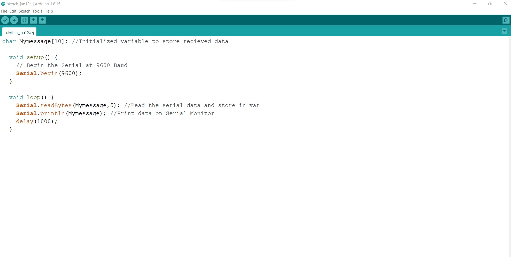

Week 16: Network and Communication
In this class, we learnt about the how networks and protocols work.
What I learnt during the class, is that a computer network is a set of computers sharing resources located on or provided by network nodes. The computers use common communication protocols over digital interconnections to communicate with each other.
A protocol, is a system of rules that allows two or more entities of a communications system to transmit information via any kind of variation of a physical quantity.
For this task, I was interested in serial communication. Serial communication is a communication method that uses one or two transmission lines to send and receive data, and that data is continuously sent and received one bit at a time.
Task: Send a message between two microcontrollers (boards/ esp32 feathers or boards you made). The task could be done by pairs
For this task, I completed it much later, so I used two Arduino boards, and two computers bymyself. I used the serial communication tutorial that you can find here: I followed and read the milling process from here .
The Arduino boards are connected by RX and TX. Data is sent asynchronously, so it means that both ends of the communication need to agree on some topics, being the speed the most important one (known as baud rate). the TX pin is connected with the RX pin of the other Arduino board. Tx to Rx and Rx to Tx. A schematic showing the connection between two boards.
The way it works, is that one Arduino is the sender and the other one is the receiver. The sender send a message “Hello” to the receiver using the array I named “MyMessage”. To Send the Hello message to the receiver Arduino board we use the Serial.write() function and then there is a delay of 1000 milliseconds which is equal to 1 second.
Here is the schematic according to the tutorial:
Here is the code for the sender Urduino Board:

Here is the Code for the receiver Arduino:

Components needed: